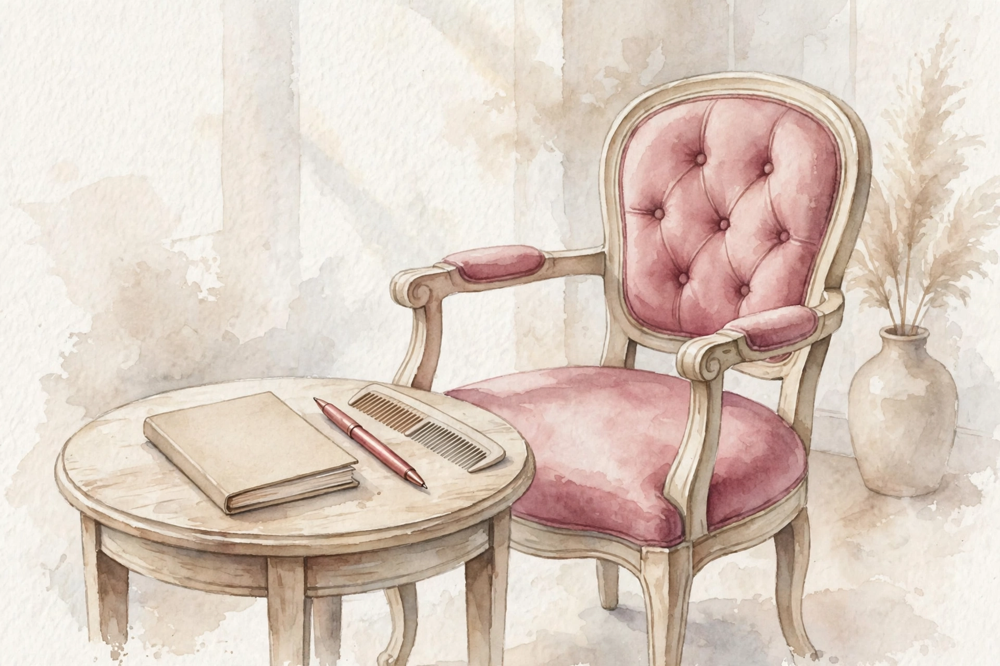

トップ ＞ ヘアケア ＞ サロン帰りに聞く、自宅ケアのメモの取り方
サロン帰りに聞く、自宅ケアのメモの取り方

美容室で聞いた自宅ケアのアドバイスを、帰宅する頃には忘れてしまった。そんな経験はありませんか。施術の現場でも、アドバイスはその場では伝わっても、数週間後には曖昧になることが多いと感じます。この記事では、聞く内容とメモの取り方を整理します。
聞くべきは「量・順番・期間」の3つ
自宅ケアについて聞くときは、量、順番、期間の3点に絞ると、実践に移しやすくなります。「このトリートメントは、どのくらいの量を、どの順番で使いますか」「施術後の何日間は、どんな扱いに注意しますか」。こうした具体的な聞き方は、答える側も答えやすくなります。
使っている自宅のアイテムの名前を伝えておくと、そのアイテムに合わせた答えが返ってきます。アイテムの写真をスマートフォンに残しておくと、伝える手間が省けます。カラーやパーマの後の注意点は、別記事「カラー・パーマ後の表示の見方」でも触れています。
メモは「その場で、短く」
メモは、施術中や会計の待ち時間など、その場で取るのが確実です。書く内容は、量、順番、期間の3点と、注意点を一言。長い文章である必要はありません。箇条書きで十分です。スマートフォンのメモアプリに「日付と施術内容」を見出しにして残すと、後から見返すときに探しやすくなります。
聞き逃した場合は、次回来店時に確認すれば十分です。分からないまま自己流で進めるより、メモを見ながら「この理解で合っていますか」と確かめる方が、ケアの精度が上がります。
記録は「次回の相談」の材料になる
メモの記録は、次回の来店時の相談材料にもなります。「この量だと重く感じた」「この手順は続けられた」といった自分の感想を添えておくと、美容師側も調整の提案がしやすくなります。施術は1回ごとの積み重ねで、髪の扱いが決まっていきます。
記録の習慣は、頭皮のセルフチェックなど、他のケアでも同じです。聞く、残す、見返す。この3つの流れを作ることが、自宅ケアの質を支えます。まずは次の来店時に、ひとつだけ質問を用意していくことから始めてみてください。
質問の用意の仕方にも、コツがあります。施術が始まる前に「今日は自宅ケアで聞きたいことがあります」と一言伝えておくと、施術の合間に答えてもらいやすくなります。帰り際に慌てて聞くよりも、落ち着いて確認できます。聞く側の段取りも、メモの質を左右します。
メモを見返すタイミングも決めておくと、記録が活きます。次の買い物の前、アイテムを使い切る前、季節の変わり目。こうした節目にメモを開くと、買い物の判断材料になります。記録は、書くだけでなく、使う場面まで決めておくことで、初めて役に立つものです。
メモの取り方で、もうひとつ大切なのが、美容師への伝え方です。「前回のメモを見て、この量で続けています」と伝えるだけで、施術者は前回からの変化を前提に話ができます。記録は、施術者との会話の質も上げる材料なのです。また、アイテムを買い替えたときは、メモに商品名と使い始めた日を書き添えてください。次回の来店時に、使っているアイテムの変遷がすぐ分かります。買い替えの記録とケアのメモは、同じノートにまとめておくのがおすすめです。情報が1か所にあると、見返す手間が減ります。
メモは、書き方よりも続けることが大切です。完璧な記録を目指さず、一言でも残す。この軽さが、記録の習慣を支えます。まずは次回の来店で、ひとつだけメモすることから始めてください。
メモの形式は、紙でもスマートフォンでも構いません。大切なのは、見返せる場所が1つに決まっていることです。記録の置き場所を決めることが、記録の習慣の土台になります。
セラフィナ「サロンのアドバイスは、その場で短くメモ。量・順番・期間の3点があれば十分だよ」